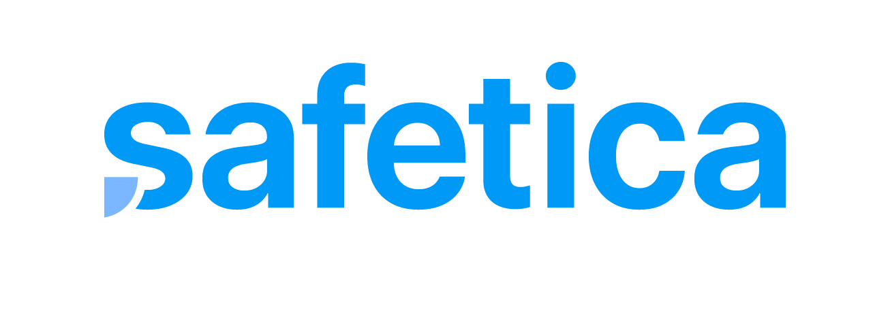

Data Loss Prevention
ช่วยกำหนด policy และจุดควบคุมข้อมูลสำคัญ เพื่อลดความเสี่ยงจากการส่งต่อหรือคัดลอกข้อมูลผิดช่องทาง
Data Security Solutions
Data Security Solutions ช่วยให้องค์กรดูแลข้อมูลสำคัญตั้งแต่การจัดเก็บ การรับส่ง การเข้าถึง ไปจนถึงการตรวจสอบย้อนหลัง ATS ออกแบบแนวทางให้เหมาะกับระดับความสำคัญของข้อมูล เพื่อช่วยลดความเสี่ยงข้อมูลรั่วไหลและสนับสนุนการเตรียมความพร้อมด้าน PDPA
บริการของเรา
Our Services
ช่วยกำหนด policy และจุดควบคุมข้อมูลสำคัญ เพื่อลดความเสี่ยงจากการส่งต่อหรือคัดลอกข้อมูลผิดช่องทาง

แนะนำการเข้ารหัสข้อมูลสำคัญ ทั้งข้อมูลที่จัดเก็บและข้อมูลที่รับส่งระหว่างระบบ

จัดสิทธิ์การเข้าถึงข้อมูลและระบบตามบทบาท ลดการเปิดสิทธิ์เกินจำเป็นและช่วยให้ตรวจสอบได้ง่ายขึ้น

รวบรวม log ที่เกี่ยวข้องกับข้อมูลและการเข้าถึง เพื่อใช้ตรวจสอบเหตุการณ์และทำ audit trail

ช่วยทบทวนการจัดเก็บ ใช้งาน แชร์ และป้องกันข้อมูลส่วนบุคคล พร้อมแนวทางบันทึกหลักฐานที่จำเป็น

กำหนดแนวทางจัดชั้นข้อมูล การแชร์ การเก็บรักษา และการลบข้อมูล เพื่อให้ทีมใช้งานข้อมูลได้ปลอดภัยขึ้น
ระบบจัดการ Log รวมศูนย์
MarLog เป็นระบบรวบรวมข้อมูล Log จากทุกอุปกรณ์และระบบเครือข่ายภายในองค์กร มารวมไว้ในที่เดียวกันเพื่อความสะดวกในการวิเคราะห์และตรวจสอบภัยคุกคามไซเบอร์

วิเคราะห์ภัยคุกคามแบบเรียลไทม์ และระบบตรวจจับพฤติกรรมผิดปกติของอุปกรณ์ (UEBA) ได้อย่างแม่นยำ

ค้นหาและระบุตัวตนของอุปกรณ์ในระบบเครือข่ายอัตโนมัติ พร้อมจัดทำฐานข้อมูลรายละเอียดอุปกรณ์และประวัติความเสี่ยง

สร้างแผนผังโครงสร้างเครือข่าย Layer 2 / Layer 3 อัตโนมัติ เพื่อตรวจสอบสถานะและปริมาณแบนด์วิดท์แบบเรียลไทม์

วิเคราะห์ช่องโหว่ของอุปกรณ์โดยเทียบกับฐานข้อมูล CVE สากล พร้อมแจ้งเตือนเมื่อพบอุปกรณ์แปลกปลอมในเครือข่าย

สร้างรายงานอัตโนมัติรองรับความสอดคล้องมาตรฐานความปลอดภัย PDPA, ISO 27001, NIST CSF และ พ.ร.บ. คอมพิวเตอร์ฯ

สั่งการตอบสนองภัยคุกคามอัตโนมัติด้วย Playbook Builder ช่วยบล็อกไอพีหรือกักกันเครื่องติดมัลแวร์ได้ทันทีผ่าน API
Customer Benefits
แบรนด์ด้าน Data Security ที่เรารองรับสำหรับการออกแบบ จัดหา ติดตั้ง และดูแลระบบให้องค์กร
